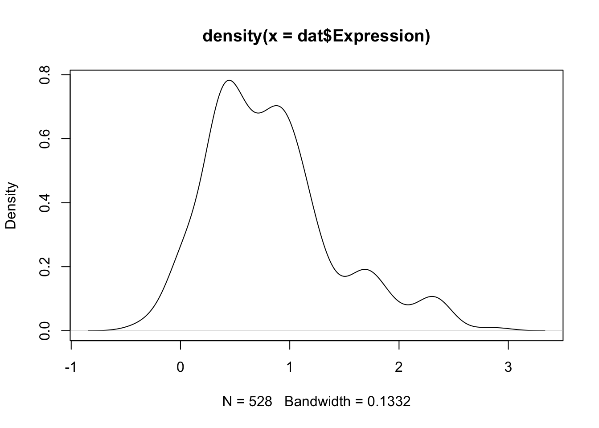
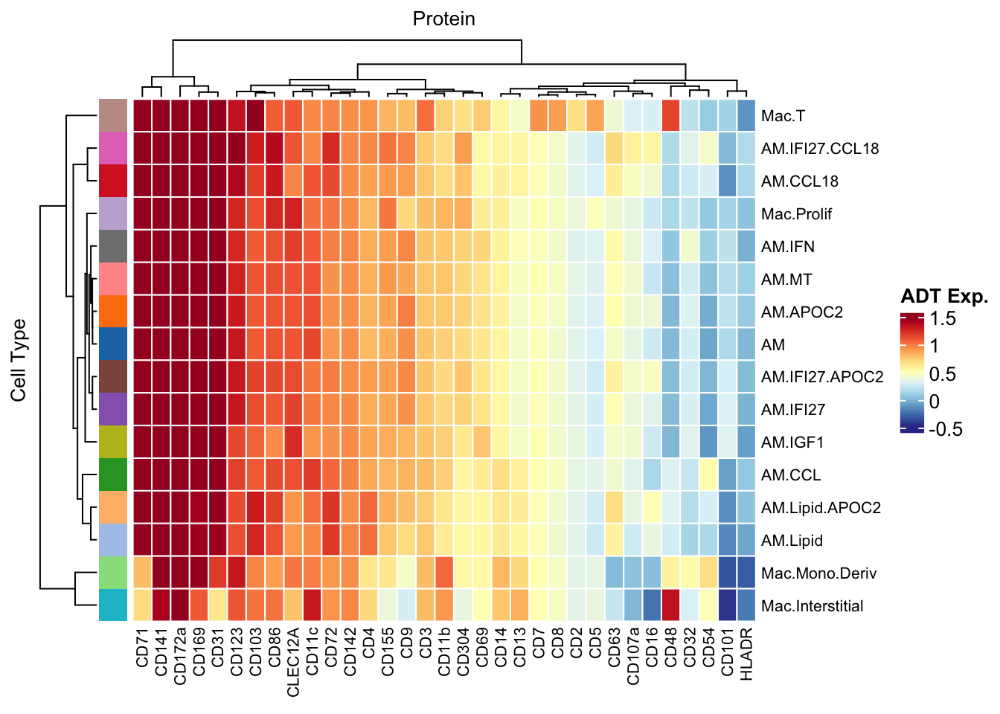
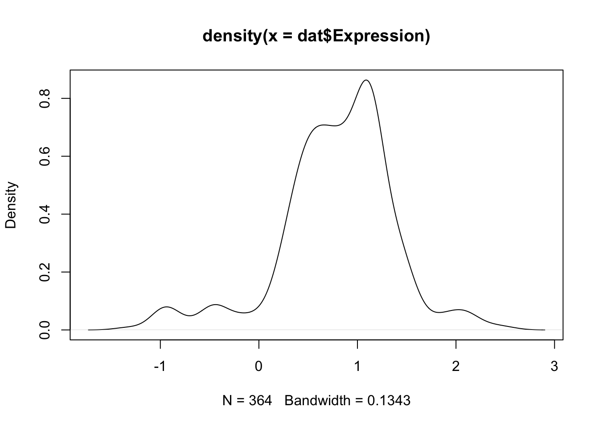
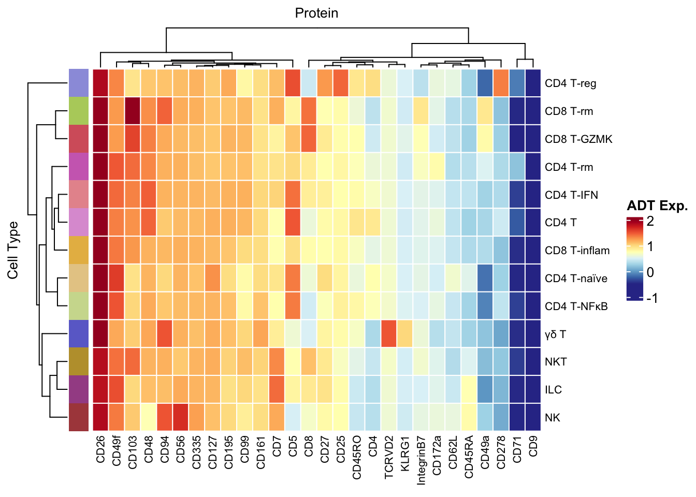
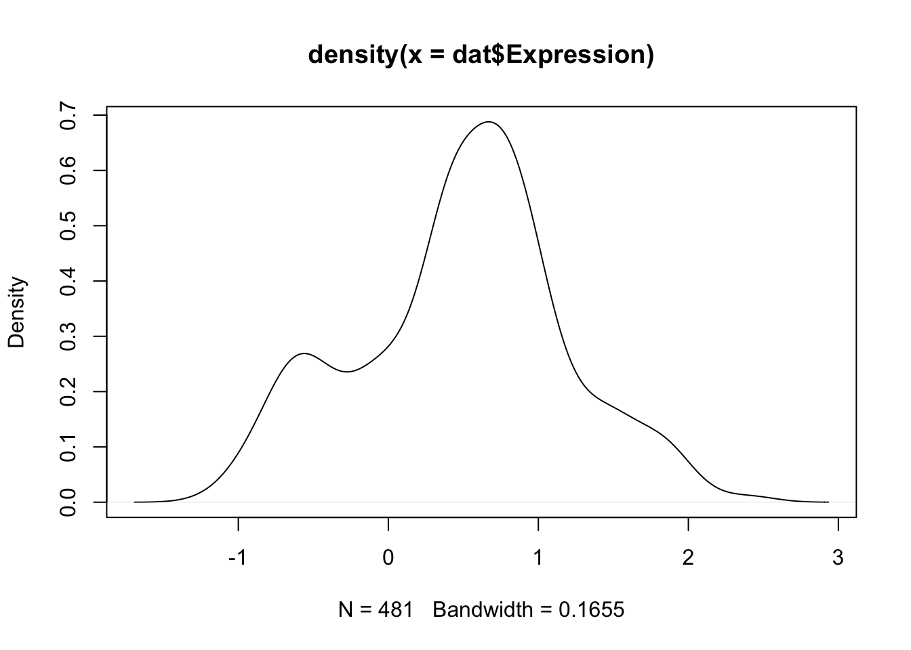
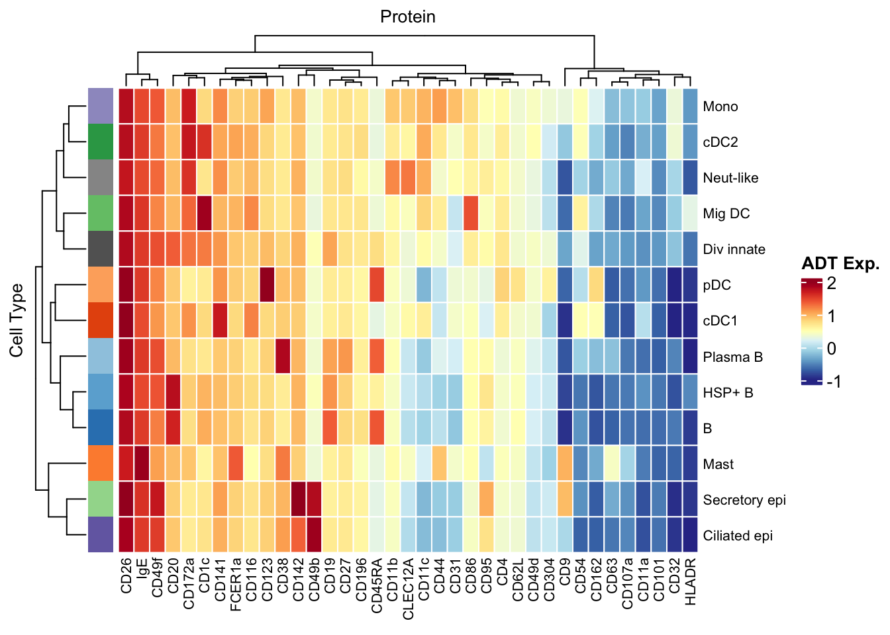
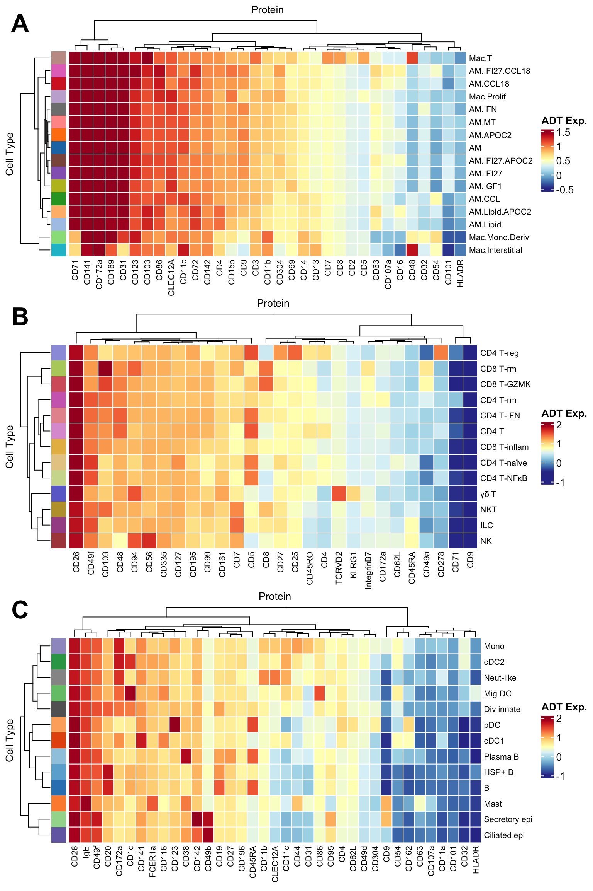

Last updated: 2026-03-23
Checks: 7 0
Knit directory:
paediatric-cf-inflammation-citeseq/
This reproducible R Markdown analysis was created with workflowr (version 1.7.1). The Checks tab describes the reproducibility checks that were applied when the results were created. The Past versions tab lists the development history.
Great! Since the R Markdown file has been committed to the Git repository, you know the exact version of the code that produced these results.
Great job! The global environment was empty. Objects defined in the global environment can affect the analysis in your R Markdown file in unknown ways. For reproduciblity it’s best to always run the code in an empty environment.
The command set.seed(20240216) was run prior to running
the code in the R Markdown file. Setting a seed ensures that any results
that rely on randomness, e.g. subsampling or permutations, are
reproducible.
Great job! Recording the operating system, R version, and package versions is critical for reproducibility.
Nice! There were no cached chunks for this analysis, so you can be confident that you successfully produced the results during this run.
Great job! Using relative paths to the files within your workflowr project makes it easier to run your code on other machines.
Great! You are using Git for version control. Tracking code development and connecting the code version to the results is critical for reproducibility.
The results in this page were generated with repository version 4b1341b. See the Past versions tab to see a history of the changes made to the R Markdown and HTML files.
Note that you need to be careful to ensure that all relevant files for
the analysis have been committed to Git prior to generating the results
(you can use wflow_publish or
wflow_git_commit). workflowr only checks the R Markdown
file, but you know if there are other scripts or data files that it
depends on. Below is the status of the Git repository when the results
were generated:
Ignored files:
Ignored: .Rhistory
Ignored: .Rproj.user/
Ignored: analysis/.DS_Store
Ignored: code/obsolete/
Ignored: data/.DS_Store
Ignored: data/C133_Neeland_batch0/
Ignored: data/C133_Neeland_batch1/
Ignored: data/C133_Neeland_batch2/
Ignored: data/C133_Neeland_batch3/
Ignored: data/C133_Neeland_batch4/
Ignored: data/C133_Neeland_batch5/
Ignored: data/C133_Neeland_batch6/
Ignored: data/C133_Neeland_merged/
Ignored: data/Neeland_processed_data_1.h5ad
Ignored: data/Neeland_processed_data_2.h5ad
Ignored: data/Neeland_processed_data_3.h5ad
Ignored: data/intermediate_objects/.DS_Store
Ignored: data/updated_h5ad_files/
Ignored: renv/library/
Ignored: renv/staging/
Untracked files:
Untracked: analysis/14.2_DGE_analysis_ciliated-epithelial-cells.Rmd
Untracked: analysis/cellxgene_submission.Rmd
Untracked: analysis/epithelial_cell_analysis.Rmd
Untracked: analysis/epithelial_cell_analysis.nb.html
Untracked: data/GOBP_CYTOKINE_MEDIATED_SIGNALING_PATHWAY.v2025.1.Hs.tsv
Untracked: data/cellxgene_cell_ontologies_ann_level_3.xlsx
Untracked: data/gencode.v44.primary_assembly.annotation.gtf
Untracked: data/intermediate_objects/prop.ann_level1.all.fit.rds
Untracked: data/intermediate_objects/prop.ann_level3.macrophages.fit.rds
Untracked: data/intermediate_objects/prop.ann_level3.non-macrophages.fit.rds
Untracked: output/dge_analysis/epithelial cells/
Untracked: output/pdf_figures/
Unstaged changes:
Modified: .DS_Store
Modified: analysis/13.0_DGE_analysis_macrophages.Rmd
Modified: analysis/13.1_DGE_analysis_macro-alveolar.Rmd
Modified: analysis/13.2_DGE_analysis_macro-APOC2+.Rmd
Modified: analysis/13.3_DGE_analysis_macro-CCL.Rmd
Modified: analysis/13.4_DGE_analysis_macro-IFI27.Rmd
Modified: analysis/13.5_DGE_analysis_macro-lipid.Rmd
Modified: analysis/13.6_DGE_analysis_macro-monocyte-derived.Rmd
Modified: analysis/13.7_DGE_analysis_macro-proliferating.Rmd
Modified: analysis/14.0_DGE_analysis_CD4-T-cells.Rmd
Modified: analysis/14.1_DGE_analysis_CD8-T-cells.Rmd
Modified: analysis/14.2_DGE_analysis_DC-cells.Rmd
Modified: analysis/15.0_proportions_analysis_ann_level_1.Rmd
Modified: analysis/15.1_proportions_analysis_ann_level_3_non-macrophages.Rmd
Modified: analysis/15.2_proportions_analysis_ann_level_3_macrophages.Rmd
Modified: data/intermediate_objects/macrophages.CF_samples.fit.rds
Modified: data/intermediate_objects/macrophages.all_samples.fit.rds
Modified: output/dge_analysis/macrophages/CAM.FIBROSIS.CF.IVAvCF.NO_MOD.csv
Modified: output/dge_analysis/macrophages/CAM.FIBROSIS.CF.IVAvNON_CF.CTRL.csv
Modified: output/dge_analysis/macrophages/CAM.FIBROSIS.CF.LUMA_IVAvCF.NO_MOD.csv
Modified: output/dge_analysis/macrophages/CAM.FIBROSIS.CF.NO_MOD.SvCF.NO_MOD.M.csv
Modified: output/dge_analysis/macrophages/CAM.FIBROSIS.CF.NO_MODvNON_CF.CTRL.csv
Modified: output/dge_analysis/macrophages/CAM.GO.CF.IVAvCF.NO_MOD.csv
Modified: output/dge_analysis/macrophages/CAM.GO.CF.IVAvNON_CF.CTRL.csv
Modified: output/dge_analysis/macrophages/CAM.GO.CF.LUMA_IVAvCF.NO_MOD.csv
Modified: output/dge_analysis/macrophages/CAM.GO.CF.NO_MOD.SvCF.NO_MOD.M.csv
Modified: output/dge_analysis/macrophages/CAM.GO.CF.NO_MODvNON_CF.CTRL.csv
Modified: output/dge_analysis/macrophages/CAM.HALLMARK.CF.IVAvCF.NO_MOD.csv
Modified: output/dge_analysis/macrophages/CAM.HALLMARK.CF.IVAvNON_CF.CTRL.csv
Modified: output/dge_analysis/macrophages/CAM.HALLMARK.CF.LUMA_IVAvCF.NO_MOD.csv
Modified: output/dge_analysis/macrophages/CAM.HALLMARK.CF.NO_MOD.SvCF.NO_MOD.M.csv
Modified: output/dge_analysis/macrophages/CAM.HALLMARK.CF.NO_MODvNON_CF.CTRL.csv
Modified: output/dge_analysis/macrophages/CAM.REACTOME.CF.IVAvCF.NO_MOD.csv
Modified: output/dge_analysis/macrophages/CAM.REACTOME.CF.IVAvNON_CF.CTRL.csv
Modified: output/dge_analysis/macrophages/CAM.REACTOME.CF.LUMA_IVAvCF.NO_MOD.csv
Modified: output/dge_analysis/macrophages/CAM.REACTOME.CF.NO_MOD.SvCF.NO_MOD.M.csv
Modified: output/dge_analysis/macrophages/CAM.REACTOME.CF.NO_MODvNON_CF.CTRL.csv
Modified: output/dge_analysis/macrophages/CAM.WP.CF.IVAvCF.NO_MOD.csv
Modified: output/dge_analysis/macrophages/CAM.WP.CF.IVAvNON_CF.CTRL.csv
Modified: output/dge_analysis/macrophages/CAM.WP.CF.LUMA_IVAvCF.NO_MOD.csv
Modified: output/dge_analysis/macrophages/CAM.WP.CF.NO_MOD.SvCF.NO_MOD.M.csv
Modified: output/dge_analysis/macrophages/CAM.WP.CF.NO_MODvNON_CF.CTRL.csv
Modified: output/dge_analysis/macrophages/CF.IVAvCF.NO_MOD.csv
Modified: output/dge_analysis/macrophages/CF.IVAvNON_CF.CTRL.csv
Modified: output/dge_analysis/macrophages/CF.LUMA_IVAvCF.NO_MOD.csv
Modified: output/dge_analysis/macrophages/CF.NO_MOD.SvCF.NO_MOD.M.csv
Modified: output/dge_analysis/macrophages/CF.NO_MODvNON_CF.CTRL.csv
Modified: output/dge_analysis/macrophages/ORA.GO.CF.IVAvNON_CF.CTRL.csv
Modified: output/dge_analysis/macrophages/ORA.GO.CF.NO_MOD.SvCF.NO_MOD.M.csv
Modified: output/dge_analysis/macrophages/ORA.GO.CF.NO_MODvNON_CF.CTRL.csv
Modified: output/dge_analysis/macrophages/ORA.HALLMARK.CF.IVAvCF.NO_MOD.csv
Modified: output/dge_analysis/macrophages/ORA.REACTOME.CF.NO_MODvNON_CF.CTRL.csv
Note that any generated files, e.g. HTML, png, CSS, etc., are not included in this status report because it is ok for generated content to have uncommitted changes.
These are the previous versions of the repository in which changes were
made to the R Markdown
(analysis/16.6_Supplementary_Figure_2.Rmd) and HTML
(docs/16.6_Supplementary_Figure_2.html) files. If you’ve
configured a remote Git repository (see ?wflow_git_remote),
click on the hyperlinks in the table below to view the files as they
were in that past version.
| File | Version | Author | Date | Message |
|---|---|---|---|---|
| Rmd | 4b1341b | Jovana Maksimovic | 2026-03-23 | wflow_publish("analysis/16.6_Supplementary_Figure_2.Rmd") |
| html | abdf460 | Jovana Maksimovic | 2025-09-10 | Build site. |
| Rmd | bba18ce | Jovana Maksimovic | 2025-09-10 | wflow_publish("analysis/16.6_Supplementary_Figure_2.Rmd") |
Load libraries.
suppressPackageStartupMessages({
library(SingleCellExperiment)
library(edgeR)
library(tidyverse)
library(ggplot2)
library(Seurat)
library(glmGamPoi)
library(dittoSeq)
library(here)
library(clustree)
library(patchwork)
library(AnnotationDbi)
library(org.Hs.eg.db)
library(glue)
library(speckle)
library(tidyHeatmap)
library(paletteer)
library(dsb)
library(ggh4x)
library(readxl)
})Load the ADT data from save, pre-processed objects.
files <- list.files(here("data/C133_Neeland_merged"),
pattern = "C133_Neeland_full_clean.*(macrophages|t_cells|other_cells)_annotated_full.SEU.rds",
full.names = TRUE)
# read in the ADT data, excluding everything else
seuLst <- lapply(files, function(f){
s <- readRDS(f)
DefaultAssay(s) <- "ADT"
DietSeurat(s, assays = "ADT", dimreducs = NULL)
})
adt_names <- rownames(seuLst[[1]][["ADT"]]@counts)
seuLst <- lapply(seuLst, function(s){
DefaultAssay(s) <- "ADT"
if(!all(rownames(s) == adt_names)){
adt_counts <- s[["ADT"]]@counts
rownames(adt_counts) <- adt_names
CreateSeuratObject(counts = adt_counts,
assay = "ADT",
meta.data = s@meta.data)
} else {
s
}
})
seuADT <- merge(seuLst[[1]],
y = c(seuLst[[2]],
seuLst[[3]]))
seuADT <- seuADT[, seuADT$Batch != 0]
seuADTAn object of class Seurat
163 features across 168859 samples within 1 assay
Active assay: ADT (163 features, 0 variable features)Make data frame of proteins, clusters, expression levels.
out <- here("data",
"C133_Neeland_merged",
glue("C133_Neeland_full_clean_all_cells_dsb.ADT.rds"))
read_csv(file = here("data",
"C133_Neeland_batch1",
"data",
"sample_sheets",
"ADT_features.csv")) -> adt_data
pattern <- "anti-human/mouse |anti-human/mouse/rat |anti-mouse/human "
adt_data$name <- gsub(pattern, "", adt_data$name)
if(!file.exists(out)){
adt_data %>%
dplyr::filter(grepl("[Ii]sotype", name)) %>%
pull(name) -> isotype_controls
# normalise ADT using DSB normalisation
adt_dsb <- ModelNegativeADTnorm(cell_protein_matrix = seuADT[["ADT"]]@counts,
denoise.counts = TRUE,
use.isotype.control = TRUE,
isotype.control.name.vec = isotype_controls)
saveRDS(adt_dsb, file = out)
} else {
adt_dsb <- readRDS(out)
}
seuADT[["ADT"]]@data <- adt_dsb
seuADTAn object of class Seurat
163 features across 168859 samples within 1 assay
Active assay: ADT (163 features, 0 variable features)lab_map <- c(
"macro-alveolar" = "AM",
"macro-IGF1" = "AM.IGF1",
"macro-CCL" = "AM.CCL",
"macro-lipid" = "AM.Lipid",
"macro-MT" = "AM.MT",
"macro-IFN" = "AM.IFN",
"macro-APOC2+" = "AM.APOC2",
"macro-CCL18" = "AM.CCL18",
"macro-IFI27" = "AM.IFI27",
"macro-monocyte-derived" = "Mac.Mono.Deriv",
"macro-interstitial" = "Mac.Interstitial",
"macro-lipid-APOC2+" = "AM.Lipid.APOC2",
"macro-T" = "Mac.T",
"macro-IFI27+CCL18+" = "AM.IFI27.CCL18",
"macro-IFI27+APOC2+" = "AM.IFI27.APOC2",
"macro-proliferating" = "Mac.Prolif",
"macrophages" = "All Macs (exc. Prolif)"
)seuADT$ann_level_3 <- ifelse(str_detect(seuADT$ann_level_3, "proliferating"),
"macro-proliferating",
seuADT$ann_level_3)
# map long labels to short labels
seuADT$short_labels <- lab_map[seuADT$ann_level_3]
# match ordering of the levels betwen long and short labels
lut <- unique(seuADT@meta.data[, c("ann_level_3", "short_labels")])
lut <- lut[match(levels(factor(seuADT$ann_level_3)), lut$ann_level_3), , drop = FALSE]
# update level ordering for short labels
seuADT$short_labels <- factor(seuADT$short_labels,
levels = unique(lut$short_labels))# ADTs <- read_csv(file = here("data",
# "Proteins_macs_22.04.22.csv"))
# pattern <- "anti-human/mouse |anti-human/mouse/rat |anti-mouse/human |anti-human "
# ADTs$Description <- gsub(pattern, "", ADTs$Description)
ADTs <- read_excel(here("data",
"cluster_annotations",
"marker_proteins_macrophages_supp.xlsx"))
ADTs$Description <- sub("^.*?\\s", "", ADTs$Description)
seuADT@meta.data %>%
dplyr::filter(str_detect(ann_level_3, "^macro")) %>%
dplyr::select(short_labels) %>%
rownames_to_column(var = "cell") %>%
inner_join(as.data.frame(t(seuADT[["ADT"]]@data)) %>%
rownames_to_column(var = "cell")) %>%
pivot_longer(c(-cell, -short_labels),
names_to = "ADT",
values_to = "Expression") %>%
dplyr::group_by(short_labels, ADT) %>%
dplyr::summarize(Expression = mean(Expression)) %>%
ungroup() %>%
right_join(ADTs, by = c("ADT" = "Description")) -> dat
plot(density(dat$Expression))
| Version | Author | Date |
|---|---|---|
| abdf460 | Jovana Maksimovic | 2025-09-10 |
dat %>%
dplyr::rename("Protein" = "ADT.y",
"ADT Exp." = "Expression",
"Cell Type" = "short_labels") %>%
tidyHeatmap::heatmap(
.column = Protein,
.row = `Cell Type`,
.value = `ADT Exp.`,
scale = "none",
rect_gp = grid::gpar(col = "white", lwd = 1),
show_row_names = TRUE,
cluster_rows = TRUE,
cluster_columns = TRUE,
column_names_gp = grid::gpar(fontsize = 8),
column_title_gp = grid::gpar(fontsize = 10),
row_names_gp = grid::gpar(fontsize = 8),
row_title_gp = grid::gpar(fontsize = 10),
column_title_side = "top",
palette_value = circlize::colorRamp2(seq(-0.5, 1.5, length.out = 11),
rev(RColorBrewer::brewer.pal(11, "RdYlBu"))),
heatmap_legend_param = list(direction = "vertical")) %>%
add_tile(`Cell Type`, show_legend = FALSE,
show_annotation_name = FALSE,
palette = paletteer_d("ggsci::category20_d3",
length(unique(dat$short_labels)))) %>%
as_ComplexHeatmap() -> sfig_1a
sfig_1a
| Version | Author | Date |
|---|---|---|
| abdf460 | Jovana Maksimovic | 2025-09-10 |
lab_map <- c(
"CD4 T cells" = "CD4 T",
"CD4 T-IFN" = "CD4 T-IFN",
"CD4 T-naïve" = "CD4 T-naïve", # use "CD4 naive" if you want ASCII
"CD4 T-NFKB" = "CD4 T-NFκB", # use "CD4 NFKB" for ASCII
"CD4 T-reg" = "CD4 T-reg",
"CD4 T-rm" = "CD4 T-rm",
"CD8 T-GZMK" = "CD8 T-GZMK",
"CD8 T-inflammasome" = "CD8 T-inflam",
"CD8 T-rm" = "CD8 T-rm",
"gamma delta T cells" = "γδ T", # or "gd T"
"innate lymphocytes" = "ILC",
"NK cells" = "NK",
"NK-T cells" = "NKT",
"proliferating T/NK" = "Prolif T/NK"
)Map long cell type labels to short labels.
# map long labels to short labels
seuADT$short_labels <- lab_map[seuADT$ann_level_3]
# match ordering of the levels betwen long and short labels
lut <- unique(seuADT@meta.data[, c("ann_level_3", "short_labels")])
lut <- lut[match(levels(factor(seuADT$ann_level_3)), lut$ann_level_3), , drop = FALSE]
# update level ordering for short labels
seuADT$short_labels <- factor(seuADT$short_labels,
levels = unique(lut$short_labels))# ADTs <- read_csv(file = here("data",
# "Proteins_T-NK_22.04.22.csv"))
# pattern <- "anti-human/mouse |anti-human/mouse/rat |anti-mouse/human |anti-human "
# ADTs$Description <- gsub(pattern, "", ADTs$Description)
ADTs <- read_excel(here("data",
"cluster_annotations",
"marker_proteins_TNK_supp.xlsx"))
ADTs$Description <- sub("^.*?\\s", "", ADTs$Description)
seuADT@meta.data %>%
dplyr::filter(!is.na(short_labels)) %>%
dplyr::select(short_labels) %>%
rownames_to_column(var = "cell") %>%
inner_join(as.data.frame(t(seuADT[["ADT"]]@data)) %>%
rownames_to_column(var = "cell")) %>%
pivot_longer(c(-cell, -short_labels),
names_to = "ADT",
values_to = "Expression") %>%
dplyr::group_by(short_labels, ADT) %>%
dplyr::summarize(Expression = mean(Expression)) %>%
ungroup() %>%
right_join(ADTs, by = c("ADT" = "Description")) -> dat
plot(density(dat$Expression))
| Version | Author | Date |
|---|---|---|
| abdf460 | Jovana Maksimovic | 2025-09-10 |
dat %>%
dplyr::rename("Protein" = "ADT.y",
"ADT Exp." = "Expression",
"Cell Type" = "short_labels") %>%
tidyHeatmap::heatmap(
.column = Protein,
.row = `Cell Type`,
.value = `ADT Exp.`,
scale = "none",
rect_gp = grid::gpar(col = "white", lwd = 1),
show_row_names = TRUE,
cluster_rows = TRUE,
cluster_columns = TRUE,
column_names_gp = grid::gpar(fontsize = 8),
column_title_gp = grid::gpar(fontsize = 10),
row_names_gp = grid::gpar(fontsize = 8),
row_title_gp = grid::gpar(fontsize = 10),
column_title_side = "top",
palette_value = circlize::colorRamp2(seq(-0.5, 2, length.out = 11),
rev(RColorBrewer::brewer.pal(11, "RdYlBu"))),
heatmap_legend_param = list(direction = "vertical")) %>%
add_tile(`Cell Type`, show_legend = FALSE,
show_annotation_name = FALSE,
palette = paletteer_d("ggsci::category20b_d3",
direction = -1)[1:length(unique(dat$short_labels))]) %>%
as_ComplexHeatmap() -> sfig_1b
sfig_1b
| Version | Author | Date |
|---|---|---|
| abdf460 | Jovana Maksimovic | 2025-09-10 |
lab_map <- c(
"B cells" = "B",
"cDC1" = "cDC1",
"cDC2" = "cDC2",
"ciliated epithelial cells" = "Ciliated epi",
"dividing innate cells" = "Div innate",
"HSP+ B cells" = "HSP+ B",
"mast cells" = "Mast",
"migratory DC" = "Mig DC",
"monocytes" = "Mono",
"neutrophil-like" = "Neut-like",
"plasma B cells" = "Plasma B",
"plasmacytoid DC" = "pDC",
"secretory epithelial cells"= "Secretory epi"
)Map long cell type labels to short labels.
# map long labels to short labels
seuADT$short_labels <- lab_map[seuADT$ann_level_3]
# match ordering of the levels betwen long and short labels
lut <- unique(seuADT@meta.data[, c("ann_level_3", "short_labels")])
lut <- lut[match(levels(factor(seuADT$ann_level_3)), lut$ann_level_3), , drop = FALSE]
# update level ordering for short labels
seuADT$short_labels <- factor(seuADT$short_labels,
levels = unique(lut$short_labels))# ADTs <- read_csv(file = here("data",
# "Proteins_other_22.04.22.csv"))
# pattern <- "anti-human/mouse |anti-human/mouse/rat |anti-mouse/human |anti-human "
# ADTs$Description <- gsub(pattern, "", ADTs$Description)
ADTs <- read_excel(here("data",
"cluster_annotations",
"marker_proteins_other_supp.xlsx"))
ADTs$Description <- sub("^.*?\\s", "", ADTs$Description)
seuADT@meta.data %>%
dplyr::filter(ann_level_1 %in% unique(seuLst[[1]]$ann_level_1)) %>%
dplyr::select(short_labels) %>%
rownames_to_column(var = "cell") %>%
inner_join(as.data.frame(t(seuADT[["ADT"]]@data)) %>%
rownames_to_column(var = "cell")) %>%
pivot_longer(c(-cell, -short_labels),
names_to = "ADT",
values_to = "Expression") %>%
dplyr::group_by(short_labels, ADT) %>%
dplyr::summarize(Expression = mean(Expression)) %>%
ungroup() %>%
right_join(ADTs, by = c("ADT" = "Description")) -> dat
plot(density(dat$Expression))
| Version | Author | Date |
|---|---|---|
| abdf460 | Jovana Maksimovic | 2025-09-10 |
dat %>%
dplyr::rename("Protein" = "ADT.y",
"ADT Exp." = "Expression",
"Cell Type" = "short_labels") %>%
tidyHeatmap::heatmap(
.column = Protein,
.row = `Cell Type`,
.value = `ADT Exp.`,
scale = "none",
rect_gp = grid::gpar(col = "white", lwd = 1),
show_row_names = TRUE,
cluster_rows = TRUE,
cluster_columns = TRUE,
column_names_gp = grid::gpar(fontsize = 8),
column_title_gp = grid::gpar(fontsize = 10),
row_names_gp = grid::gpar(fontsize = 8),
row_title_gp = grid::gpar(fontsize = 10),
column_title_side = "top",
palette_value = circlize::colorRamp2(seq(-1, 2, length.out = 11),
rev(RColorBrewer::brewer.pal(11, "RdYlBu"))),
heatmap_legend_param = list(direction = "vertical")) %>%
add_tile(`Cell Type`, show_legend = FALSE,
show_annotation_name = FALSE,
palette = paletteer_d("ggsci::category20c_d3",
length(unique(dat$short_labels)))) %>%
as_ComplexHeatmap() -> sfig_1c
sfig_1c
| Version | Author | Date |
|---|---|---|
| abdf460 | Jovana Maksimovic | 2025-09-10 |
layout = "
A
B
C
"
(wrap_plots(list(sfig_1a %>%
ComplexHeatmap::draw(heatmap_legend_side = "right",
padding = unit(0, "mm")) %>%
grid::grid.grabExpr())) +
wrap_plots(list(sfig_1b %>%
ComplexHeatmap::draw(heatmap_legend_side = "right",
padding = unit(0, "mm")) %>%
grid::grid.grabExpr())) +
wrap_plots(list(sfig_1c %>%
ComplexHeatmap::draw(heatmap_legend_side = "right",
padding = unit(0, "mm")) %>%
grid::grid.grabExpr()))) +
plot_layout(design = layout) +
plot_annotation(tag_levels = list(c("A","B","C"))) &
theme(plot.tag = element_text(size = 24,
face = "bold",
family = "arial"))
| Version | Author | Date |
|---|---|---|
| abdf460 | Jovana Maksimovic | 2025-09-10 |
sessionInfo()R version 4.3.3 (2024-02-29)
Platform: aarch64-apple-darwin20 (64-bit)
Running under: macOS 15.5
Matrix products: default
BLAS: /Library/Frameworks/R.framework/Versions/4.3-arm64/Resources/lib/libRblas.0.dylib
LAPACK: /Library/Frameworks/R.framework/Versions/4.3-arm64/Resources/lib/libRlapack.dylib; LAPACK version 3.11.0
locale:
[1] en_US.UTF-8/en_US.UTF-8/en_US.UTF-8/C/en_US.UTF-8/en_US.UTF-8
time zone: Australia/Melbourne
tzcode source: internal
attached base packages:
[1] stats4 stats graphics grDevices datasets utils methods
[8] base
other attached packages:
[1] readxl_1.4.3 ggh4x_0.3.1
[3] dsb_1.0.3 paletteer_1.6.0
[5] tidyHeatmap_1.8.1 speckle_1.2.0
[7] glue_1.8.0 org.Hs.eg.db_3.18.0
[9] AnnotationDbi_1.64.1 patchwork_1.3.1
[11] clustree_0.5.1 ggraph_2.2.0
[13] here_1.0.1 dittoSeq_1.14.2
[15] glmGamPoi_1.14.3 SeuratObject_4.1.4
[17] Seurat_4.4.0 lubridate_1.9.3
[19] forcats_1.0.0 stringr_1.5.1
[21] dplyr_1.1.4 purrr_1.0.2
[23] readr_2.1.5 tidyr_1.3.1
[25] tibble_3.2.1 ggplot2_3.5.2
[27] tidyverse_2.0.0 edgeR_4.0.15
[29] limma_3.58.1 SingleCellExperiment_1.24.0
[31] SummarizedExperiment_1.32.0 Biobase_2.62.0
[33] GenomicRanges_1.54.1 GenomeInfoDb_1.38.6
[35] IRanges_2.36.0 S4Vectors_0.40.2
[37] BiocGenerics_0.48.1 MatrixGenerics_1.14.0
[39] matrixStats_1.2.0 workflowr_1.7.1
loaded via a namespace (and not attached):
[1] fs_1.6.6 spatstat.sparse_3.0-3 bitops_1.0-7
[4] httr_1.4.7 RColorBrewer_1.1-3 doParallel_1.0.17
[7] tools_4.3.3 sctransform_0.4.1 utf8_1.2.4
[10] R6_2.5.1 lazyeval_0.2.2 uwot_0.1.16
[13] GetoptLong_1.0.5 withr_3.0.0 sp_2.1-3
[16] gridExtra_2.3 progressr_0.14.0 cli_3.6.5
[19] Cairo_1.6-2 spatstat.explore_3.2-6 prismatic_1.1.1
[22] sass_0.4.10 spatstat.data_3.0-4 ggridges_0.5.6
[25] pbapply_1.7-2 parallelly_1.37.0 rstudioapi_0.15.0
[28] RSQLite_2.3.5 generics_0.1.3 shape_1.4.6
[31] vroom_1.6.5 ica_1.0-3 spatstat.random_3.2-2
[34] dendextend_1.17.1 Matrix_1.6-5 fansi_1.0.6
[37] abind_1.4-5 lifecycle_1.0.4 whisker_0.4.1
[40] yaml_2.3.8 SparseArray_1.2.4 Rtsne_0.17
[43] grid_4.3.3 blob_1.2.4 promises_1.2.1
[46] crayon_1.5.2 miniUI_0.1.1.1 lattice_0.22-5
[49] cowplot_1.1.3 KEGGREST_1.42.0 pillar_1.9.0
[52] knitr_1.50 ComplexHeatmap_2.18.0 rjson_0.2.21
[55] future.apply_1.11.1 codetools_0.2-19 leiden_0.4.3.1
[58] getPass_0.2-4 data.table_1.15.0 vctrs_0.6.5
[61] png_0.1-8 cellranger_1.1.0 gtable_0.3.6
[64] rematch2_2.1.2 cachem_1.0.8 xfun_0.52
[67] S4Arrays_1.2.0 mime_0.12 tidygraph_1.3.1
[70] survival_3.5-8 pheatmap_1.0.12 iterators_1.0.14
[73] statmod_1.5.0 ellipsis_0.3.2 fitdistrplus_1.1-11
[76] ROCR_1.0-11 nlme_3.1-164 bit64_4.0.5
[79] RcppAnnoy_0.0.22 rprojroot_2.0.4 bslib_0.6.1
[82] irlba_2.3.5.1 KernSmooth_2.23-22 colorspace_2.1-0
[85] DBI_1.2.1 tidyselect_1.2.1 processx_3.8.3
[88] bit_4.0.5 compiler_4.3.3 git2r_0.33.0
[91] DelayedArray_0.28.0 plotly_4.10.4 scales_1.3.0
[94] lmtest_0.9-40 callr_3.7.3 digest_0.6.34
[97] goftest_1.2-3 spatstat.utils_3.0-4 rmarkdown_2.29
[100] XVector_0.42.0 htmltools_0.5.8.1 pkgconfig_2.0.3
[103] fastmap_1.1.1 rlang_1.1.6 GlobalOptions_0.1.2
[106] htmlwidgets_1.6.4 shiny_1.8.0 farver_2.1.1
[109] jquerylib_0.1.4 zoo_1.8-12 jsonlite_1.8.8
[112] mclust_6.1 RCurl_1.98-1.14 magrittr_2.0.3
[115] GenomeInfoDbData_1.2.11 munsell_0.5.0 Rcpp_1.0.12
[118] viridis_0.6.5 reticulate_1.42.0 stringi_1.8.3
[121] zlibbioc_1.48.0 MASS_7.3-60.0.1 plyr_1.8.9
[124] parallel_4.3.3 listenv_0.9.1 ggrepel_0.9.5
[127] deldir_2.0-2 Biostrings_2.70.2 graphlayouts_1.1.0
[130] splines_4.3.3 tensor_1.5 hms_1.1.3
[133] circlize_0.4.15 locfit_1.5-9.8 ps_1.7.6
[136] igraph_2.0.1.1 spatstat.geom_3.2-8 reshape2_1.4.4
[139] evaluate_0.23 renv_1.1.4 BiocManager_1.30.22
[142] tzdb_0.4.0 foreach_1.5.2 tweenr_2.0.3
[145] httpuv_1.6.14 RANN_2.6.1 polyclip_1.10-6
[148] future_1.33.1 clue_0.3-65 scattermore_1.2
[151] ggforce_0.4.2 xtable_1.8-4 later_1.3.2
[154] viridisLite_0.4.2 memoise_2.0.1 cluster_2.1.6
[157] timechange_0.3.0 globals_0.16.2